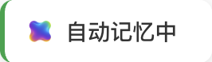

快速入门指南
按照以下简单步骤，立即开始自动保存你的 AI 对话
开始对话
正常使用 ChatGPT、Gemini、DeepSeek 等 AI 平台进行对话
自动保存
Chat Memo 会自动保存对话；点击悬浮标签可打开侧边栏，查看保存内容

复制/导出
你可以在对话详情页中复制对话，也可以在设置中一键导出全部对话记录
你将获得什么？
Chat Memo 为你提供强大的 AI 对话管理能力
统一管理
所有平台的对话集中在一处，告别分散管理的烦恼
智能搜索
快速找到任何历史对话，让知识触手可及
一键跳转
一键跳转原对话网页，方便继续和 AI 探讨
无感体验
后台自动运行，不影响你的正常使用体验
💡 使用小贴士
让 Chat Memo 发挥最大价值的实用建议
给对话起个好标题
Chat Memo 默认对话标题为你的第一句话。在重要对话时，可以先在记录详情中修改标题，可以更容易在后续搜索中找到。
常见问题
可以，只要手动点开对应聊天记录，就可以触发保存（Gemini 由于特殊加载机制，超过 20 条消息的对话，需要手动加载历史消息）
产品第一个版本，目前支持 Web 端，包含四个主流 AI Chat，包含 ChatGPT、Gemini、DeepSeek、腾讯元宝。
手机端、客户端、Coding 软件内的对话暂不支持。
如有需求，可在 Feedback 提交功能反馈，我们会排期处理。
可能是网页和插件之间初始化失败，重新刷新一次网页即可。如还有问题，请通过 Feedback 联系作者排查。
当前版本，因部分浏览器限制，无法正常打开侧边栏。接下来会想办法迭代修复，在此之前优先推荐使用 Chrome、Edge 等主流浏览器。
感谢反馈。为了醒目地提醒保存状态，当时悬浮标签是刻意做得明显。目前介意的话，可以随意拖动悬浮标签的位置，放到你想放的地方～